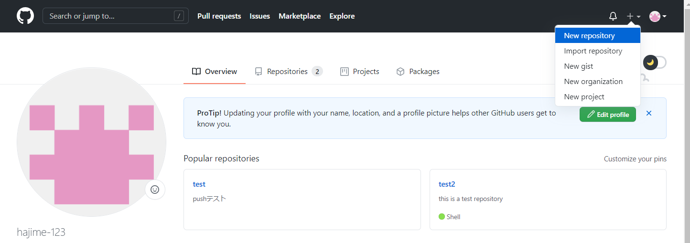
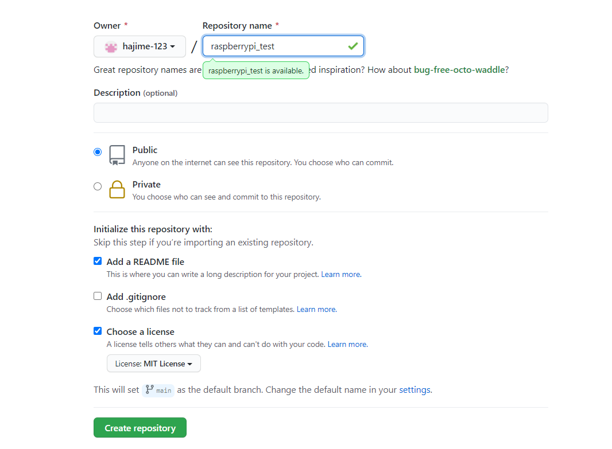

まずはrepository作成

以下の設定にする

ローカルレポジトリから リモートリポジトリへ反映
gitbash上で作業する
cd 保存先の指定
git clone https://github.com/hajime-123/raspberrypi_test.git
git add -A
git commit -m "raspi_test"
git status
commit間違えたとき
git reset HEAD
OKなら
git push
idとパスワードを求められる
ローカルレポジトリの情報をリモートレポジトリに反映させる
リモートリポジトリからローカルリポジトリへ反映
ラズパイで作業する
sudo apt install git
git clone https://github.com/hajime-123/raspberrypi_test.git